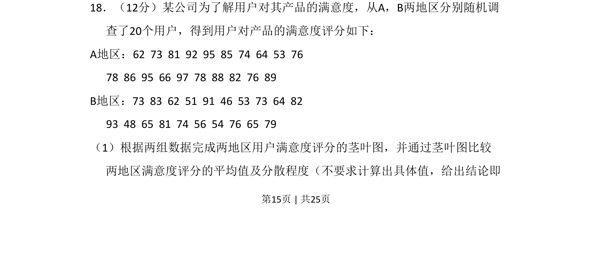
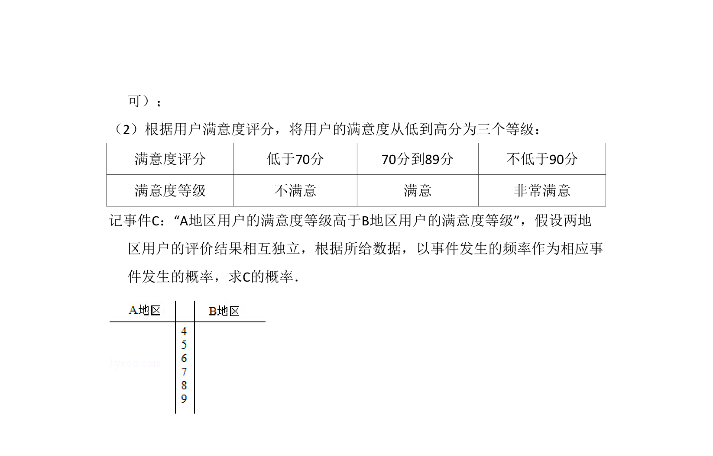
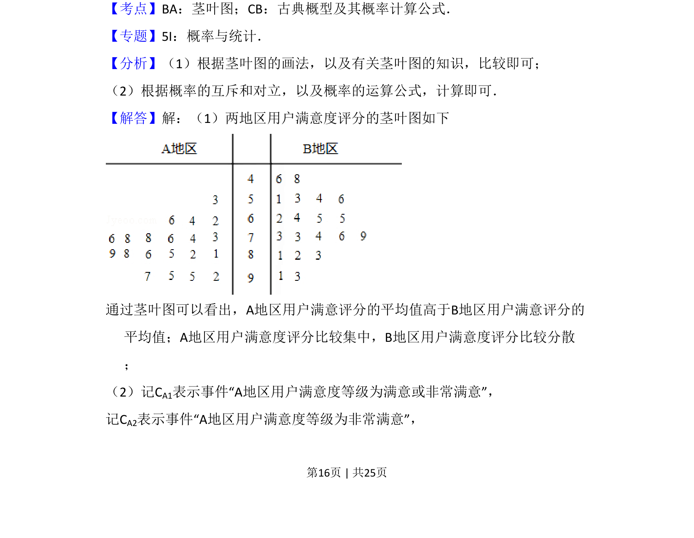
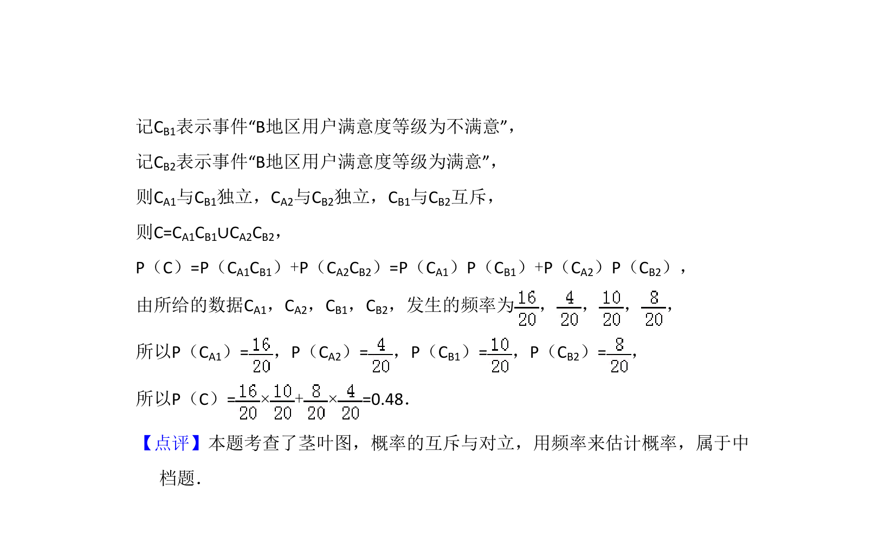

考点：茎叶图 数据分布比较 平均数 离散程度


该题考查根据数据绘制茎叶图，并通过茎叶图定性比较两组数据的平均值与分散程度。


📄 原 PDF 第 15 页：
素材/真题/吉林/2008-2024·（吉林）数学高考真题/2015年高考数学试卷（理）（新课标Ⅱ）（解析卷）.pdf
18．（12分）某公司为了解用户对其产品的满意度，从A，B两地区分别随机调 查了20个用户，得到用户对产品的满意度评分如下： A地区：62 73 81 92 95 85 74 64 53 76 78 86 95 66 97 78 88 82 76 89 B地区：73 83 62 51 91 46 53 73 64 82 93 48 65 81 74 56 54 76 65 79 （1）根据两组数据完成两地区用户满意度评分的茎叶图，并通过茎叶图比较 两地区满意度评分的平均值及分散程度（不要求计算出具体值，给出结论即